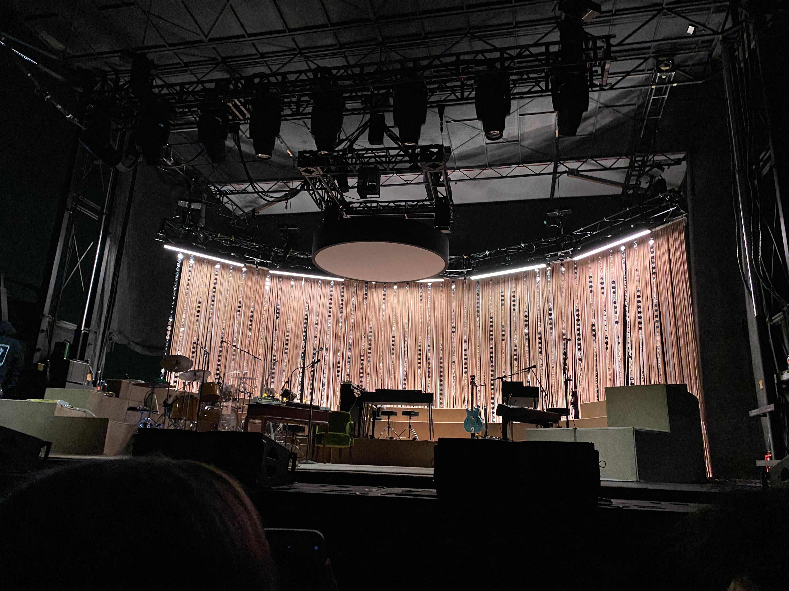
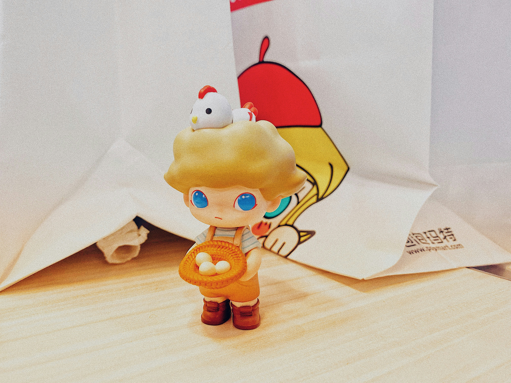

Music
When I thought I would surely fail my classes, music brought me up to a different level. Richochet by Snail Mail, Charm by Clairo, Oblivion by Alice Phoebe Lou stood by my side.
VIEW MUSIC
Food
Food is where you unlock your inner potential. It's where it stops being performative and starts being legit. The taste inside your mouth is something that can't be faked.
VIEW FOOD
Collectibles
There's a special thing about collecting little things, it really brings out your inner aesthetic. And that is why it's NOT performative, it shows who you really are.
VIEW COLLECTIBLES